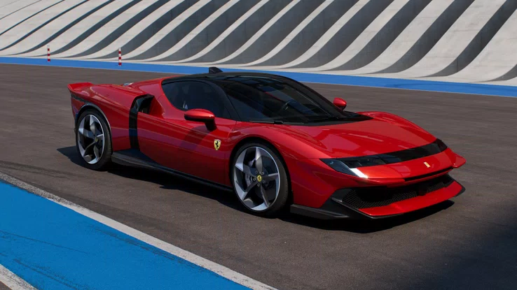

Ferrari Testarossa 849
Developed by the Ferrari Styling Centre, the 849 Testarossa revolutionises the shape of the SF90 Stradale and emphasises the car’s technological and performance characteristics.The front has volumes that recall Ferrari geometries from the past, while the rear is dominated by the two tails inspired by the 512 S.Ferrari 849 Testarossa. The interior of the 849 Testarossa is a synthesis between the layout of a berlinetta with a horizontal dashboard and the cockpit of a single-seater. The interior design instead sets out to optimise space and improve ergonomics.The steering wheel integrates digital and analogue functions: the mechanical controls already seen on the F80 have been carried over, including the iconic Engine Start button, while the digital cluster allows the rapid reconfiguration of the electric driving modes, via the eManettino.


The Ferrari 849 Testarossa took the SF90 Stradale as a reference, focusing on increasing power, tyre grip and response, the efficiency of the braking system and the evolution of electronic controls through the brand-new Ferrari Integrated Vehicle Estimator (FIVE) digital system.Ferrari 849 Testarossa - DynamicsThe increase in lateral performance compared to the SF90 Stradale is considerable, thanks to the new tyres and specific setup, which also brought a 35% reduction in the weight of the road springs. The roll has been reduced by 10%, maximising aerodynamic benefits and dynamic camber.The increase in longitudinal acceleration achieved in third gear is the combined result of the improved weight to power ratio, the increase in performance of the combustion engine at high revs and the dedicated shaping of the overall power delivery. This improvement was achieved without compromising low-end response.